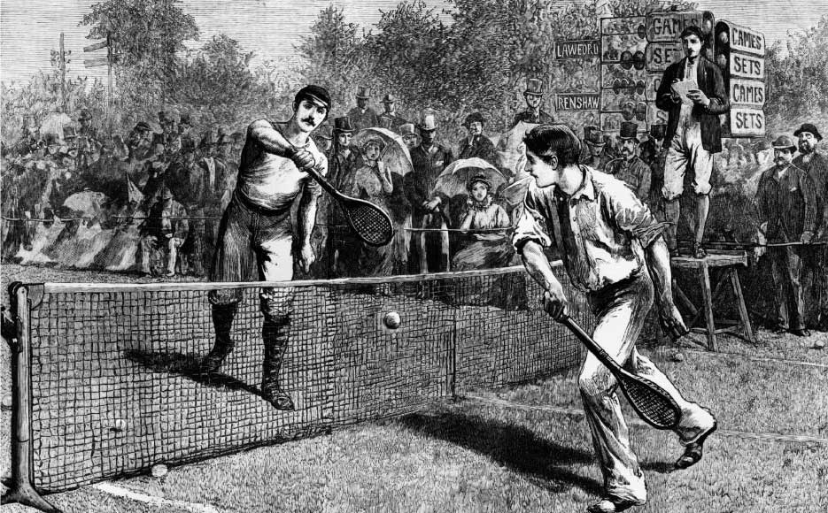

Origins
The game of tennis has roots that date back to the 12th century, when monks in France played a game called "jeu de paume" by hitting a ball with the palm of their hand. The use of racquets emerged in the 16th century, and the game began to evolve into what is known today as tennis.
The first form of modern tennis appeared in England in the late 19th century, where it became known as "lawn tennis." Major Walter Wingfield introduced the rules for the sport in , leading to widespread popularity.
(Source: History of Tennis)